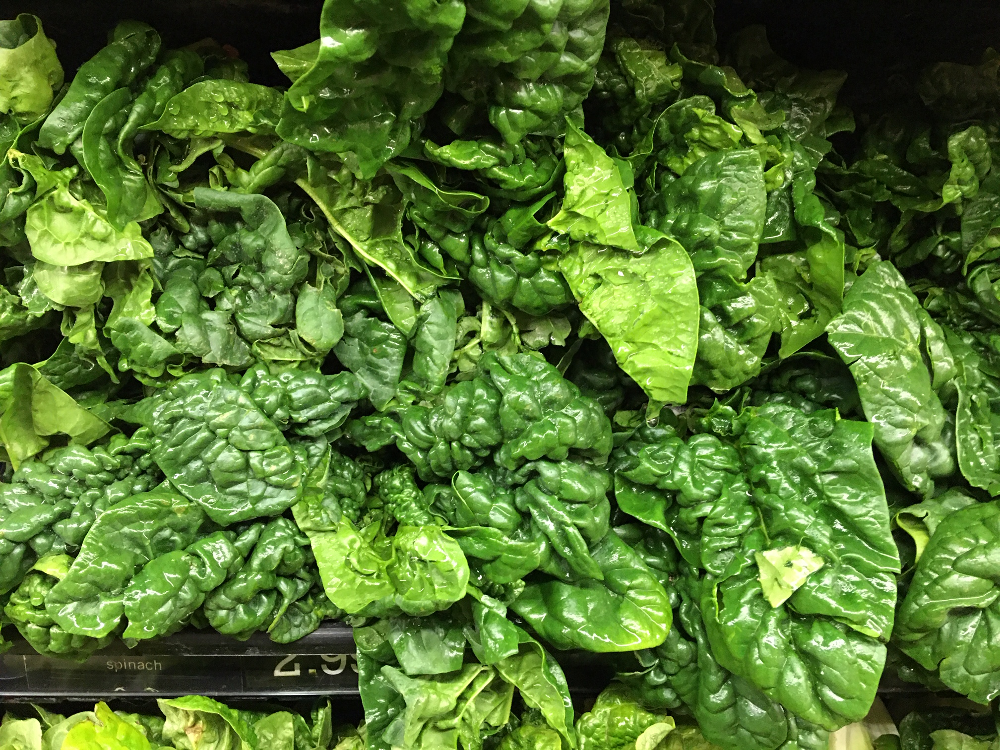

Nutrient Rich Produce & Recipes
Spinach

Spinach is a great source of
vitamins and minerals including:
Vitamin A
Vitamin C
Vitamin K1
Folic Acid
Iron
Calcium
Potassium
Carrots

Carrots a great source of
vitamins and minerals including:
Vitamin A
Vitamin C
Vitamin K
Beta-carotene
Potassium
Broccoli

Broccoli is a great source of
vitamins and minerals including:
Glucosinolate
Sulforaphane: Shown to help prevent cancer
Vitamin K
Vitamin C
Folate
Manganese
Potassium
Garlic
Garlic has a long history of medicinal use. The main active compound in garlic,
allicin, has been
shown to have many medicinal properties including:
Regulating blood sugar
promoting heart health
Lowering cholesterol
Anti-cancer effects.
Brussels Sprouts
Brussels Sprouts are known for the active ingredient Kaempferol.
Kaempferol helps defend your body
from free radicals which cause cell damage that can lead to chronic disease. Brussels sprouts also
help enhance detoxification and contain several vitamin and minerals including:
Vitamin K
Vitamin A
Vitamin C
Folate
Manganese
Potassium